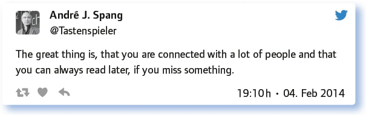
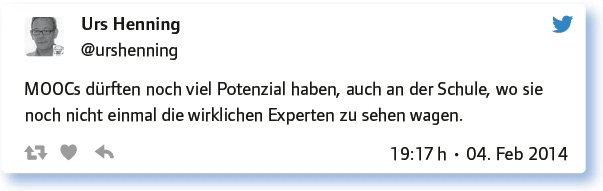
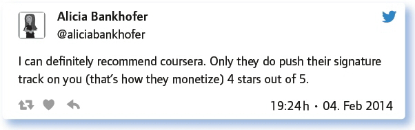
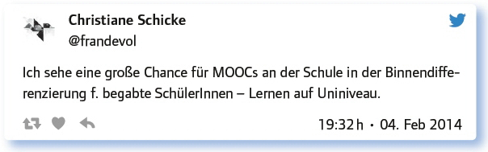
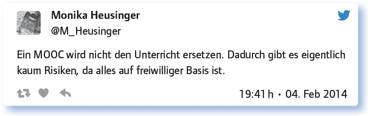

von Elke Höfler
MOOCs, also Massive Open Online Courses, sind Kursformate, die ihren Ausgang 2008 im nordamerikanischen Raum nahmen, als George Siemens und Stephen Downes den ersten sogenannten cMOOC anboten. Hierbei handelt es sich um einen auf konnektivistischen Gedanken beruhenden Kurs, der offen ist, online durchgeführt wird und eine große Anzahl Teilnehmer anspricht. Konnektivistisch meint dabei eine Lerntheorie, die von George Siemens begründet wurde und die auf unterschiedlichen Vernetzungsmöglichkeiten zwischen den Teilnehmerinnen und Teilnehmern beruht. Der Mensch lernt in bzw. aus oder von diesen Netzwerken und baut beim Lernen Knotenpunkte innerhalb des Netzwerks auf. Man kann also sagen, wir zapfen beim Lernen unsere Knotenpunkte an und stärken sie dabei auch gleichzeitig. 2012 wurde von Sebastian Thrun, einem Professor an der Stanford University, der erste sogenannte xMOOC zum Thema Künstliche Intelligenz gehalten, der mehrere 100 000 Teilnehmer anzog. Das ‚x‘ steht hier für die Erweiterung des physischen um den virtuellen Lernraum (‚extended‘).
In den letzten Jahren schwappte die Bewegung auch auf Europa und den Rest der Welt über, MOOC-Plattformen wurden gegründet, mit Coursera (www.coursera.org), edX (www.edx.org), iMooX (imoox.at), Futurelearn (www.futurelearn.com) oder Mooin (https://mooin.oncampus.de) sollen hier nur einige wenige genannt werden. Relativ rasch wurde dabei auch das Potenzial dieser Kurse erkannt, zum einen für die eigene Fort- und Weiterbildung, aber auch als Konkurrenz zu Schule und Hochschule.
Vor diesem Hintergrund wurde Anfang 2014 in der 19. Ausgabe des #EDchatDE über die Chancen von MOOCs im Kontext von Schule und Hochschule diskutiert. Moderiert wurde dieser Chat von André J. Spang (@tastenspieler) und der amerikanischen Gastmoderatorin Shelly Sanchez Terrell (@shellterrell), ihres Zeichens Gründerin des EDchat.
Schon mal bei einem MOOC mitgemacht? a) Wie war es? b) Warum nicht?
Die Antworten der Teilgeber/innen waren stark bejahend, einige hatten bereits teilgenommen oder waren gerade dabei, einen MOOC zu absolvieren. Viele zeigten sich vom Format begeistert, einige sprachen aber auch die Gründe aus, weshalb sie die besuchten MOOCs nicht beendeten:
Habe schon teilgenommen bei MOOC zu moodle. Hatte nicht genug Selbstmotivation, das durchzuziehen. Format war gut, aber zeitintensiv.
I’m afraid, no. Maybe because I haven’t come across the ‚right’ topic, maybe because I was too afraid of the commitment.
Während die hohe Anzahl Teilnehmer als gewöhnungsbedürftig bezeichnet wurde, wurden auch eigene Perspektiven genannt, wie die Flexibilität, vor allem wenn man nicht auf Zertifikate (CP) aus ist. Aber nicht alle scheinen diese Flexibiliät so wahrzunehmen:
I liked the international exchange – it was not too big (no coursera). We used twitter, g+, facebook, onlinesessions.
Bei diversen mitgemacht (sooc1314, mathemooc). – Waren recht informativ, kurzweilig. Gerade, wenn man nicht auf CP aus ist, ergibt sich stressfreies Lernen.
My experience with MOOCs: Thrilling, when I have time. If I do not have time, then MOOCs are temporally too inflexible for me.
Und auch Strategien, mit der Informationsflut umzugehen, wurden gleich zu Beginn genannt:

Passen MOOCs zum 21. century oder ist der Hype schon vorbei?
Der Grundtenor der Teilgeber/innen ging in die Richtung einer Bejahung der ersten Teilfrage. MOOCs passen ins 21. Jahrhundert, wobei betont wurde, dass es hierfür auch notwendig ist, neue Kompetenzen zu trainieren bzw. anzusprechen:
They perfectly fit the 21 century, although we need to develop certain abilities to really use MOOCs, such as self-discipline.
Auf jeden Fall: MOOC fördert die 4 Kompetenzen des 21. Jahrhunderts: Kollaboration, Kommunikation, kritisches Denken, Kreativität.
Viele bejahten auch den zweiten Fragenteil, der Hype wurde erkannt, doch wurde auch kritisch gesehen, dass diese Art zu lernen keine vorübergehende Erfindung sein sollte:
Lernen nach konnektivistischem Prinzip sollte kein Hype sein.
Ich denke, MOOCs sind wichtig für den Wechsel hin zu lebenslangem, berufsbegleitendem und -erweiterndem Lernen.
Vor allem auch das Potenzial der Vernetzung und Öffnung der Bildung für alle wurde erwähnt:
Ich denke, es passt gut in die Zeit. Hype? Irgendwie schon, aber die Chance ist Bildung nach Neigung für „alle“.
MOOCs enable very important things – access for more people – globally via the internet! They are mostly free and you have a choice! I also experienced firsthand how powerful peer assessment can be and how it simply works!
Vor allem der Weg in die Schule steht noch offen, wo MOOCs zum Zeitpunkt des #EDchatDE noch nicht angekommen waren:

Kennst du Plattformen, die MOOC anbieten? Gib uns Empfehlungen und Bewertungen.
Die genannten Plattformen waren unterschiedlich, so beispielsweise Coursera und edX aus dem amerikanischen Raum, aber auch iVersity aus Deutschland oder übergreifende Angebote wie z. B. Canvas (https://www.canvas.net/) oder die Peer 2 Peer University (https://www.p2pu.org/en/). Die Bewertungen waren dabei durchaus kritisch:

Welche Chancen bietet das Lernen in einem MOOC für die Vernetzung von Schule und Hochschule konkret?
Vor allem die Offenheit des Formats wurde von den Teilgebern herausgestrichen. Es gehe nicht nur um die Vernetzung von Schule und Hochschule, sondern auch um die Menschen, die dort arbeiten. Für die Schüler/innen bieten sie die Möglichkeit, erste Erfahrungen mit universitären bzw. universitär orientierten Kursen zu machen, oder einen Perspektivenwechsel vorzunehmen:
I think meeting people and starting to talk creates connections between teachers, and thus between schools. Simple as that.
Das offene Format. Es können alle teilnehmen. Schüler, Studenten oder Lehrpersonen … Dadurch ergeben sich viele Perspektiven und Austausch.
Und auch erste Ideen für den Einsatz in der Schule wurden diskutiert:

Welche Risiken siehst du bei MOOC?
Die Diskussion zeigte Risiken auf unterschiedlichen Ebenen – sowohl im Kursdesign, als auch im eigenen „Mitmachen“ oder auf institutioneller Ebene. Aus den Risiken heraus wurden auch Tipps gegeben, wie man einen MOOC am besten überleben kann:
There’s always danger of unqualified instructors. And lack of quality checks/norms may cheapen offerings and thus turn people off.
One problem with MOOC is that students can’t always receive credit for them even if they learn more from them.
Main risk is regression to massive online-teaching fantasies of 1998/1999. MOOCs are called „open“ for a reason …
Anderes Risiko: Man fängt viele an, beendet keinen und kommt so nie dazu, in die Tiefe zu gehen. Wissen bleibt oberflächlich.
You have to find buddies and peers to work together in a MOOC make connections as in real life. Otherwise you will fail …
Mit einem Vorurteil oder einer Verunsicherung wurde ebenso aufgeräumt:

Welche Anregungen, Fragen hast du sonst noch zum Thema?
Sind MOOCs wirklich sooo teuer, wenn man Wiederholbarkeit und möglich erreichbare Massen bedenkt?
Mich interessiert vor allem, ob ihr in der Zukunft speziell für die Schule konzipierten MOOCs eine Chance gebt.
Muss man, um einen MOOC durchzuführen, ein noch besserer Lehrer als im normalen Unterricht sein?
Fazit:
Ein Fazit war sicherlich die Feststellung, dass MOOCs für die Schule, die Hochschule und auch die eigene Fort- und Weiterbildung im Sinne des Continuing Professional Development ein gewisses Potenzial haben, sie aber als Formate durchaus gewöhnungsbedürftig sind. Die Teilnahme an MOOCs wurde als zeitintensiv beschrieben, die Selbstmotivation und auch das Thema müssen stimmen, so die Teilgeber/innen. Als Vorteile wurden die Flexibilität und auch die Möglichkeit der (konnektivistischen) Vernetzung gesehen. Zentral aber erscheint der Bedarf an zusätzlichen Skills, den 4 C’s of 21st century skills: collaboration, communication, creativity und critical thinking.
Weiterführende Materialien:
Link zum vorbereitenden Blogpost: https://edchatde.wordpress.com/2014/02/03/links-zur-vorbereitung-des-19-edchatde-mooc-chance-fur-schulehochschule-web-links-in-preparation-to-edchatde-no-19-moocs-a-chance-for-schooluniversity/
Link zum nachbereitenden Blogpost: https://edchatde.wordpress.com/2014/02/06/lernst-du-noch-oder-moocst-du-schon/
Smore zum 19. #EDchatDE: https://www.smore.com/rzez
Links und Videos:
Der Hörsaal im Internet: http://www.heute.de/Der-Hörsaal-im-Internet-30590612.html
MOOC auf Wikipedia: http://de.wikipedia.org/wiki/Massive_Open_Online_Course
TAZ: Semesterstart an der Internetuni: www.taz.de/Semesterstart-an-der-Internetuni/!126239/
Thrun: MOOCs never meant to replace college: www.ecampusnews.com/top-news/thrun-udacity-training-027/
Edutopia: 4 lessons we can learn from the failure of MOOCs: www.edutopia.org/blog/4-lessons-from-failure-of-moocs-andrew-miller
What is a MOOC: www.youtube.com/watch?v=eW3gMGqcZQc
Success in a MOOC: www.youtube.com/watch?v=r8avYQ5ZqM0
Knowledge in a MOOC: www.youtube.com/watch?v=bWKdhzSAAG0
Sebastian Thrun: Udacity – Konkurrenz für Hochschulen?: www.youtube.com/watch?v=30bLZQ_i370
Weitere Übersichten finden sich unter folgenden Links:
Deutschsprachige MOOCs: http://web2-unterricht.blogspot.co.at/2014/01/anbieter-deutschsprachiger-moocs.html,
MOOCs (allgemein): www.alumniportal-deutschland.org/studium-weiterbildung/studium-ausbildung/moocs-vorlesungen-online-besuchen/
Link zum vollständigen Protokoll: